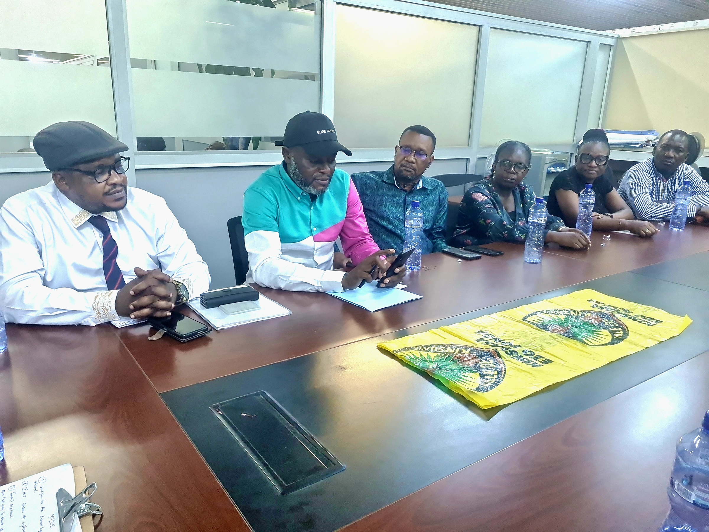
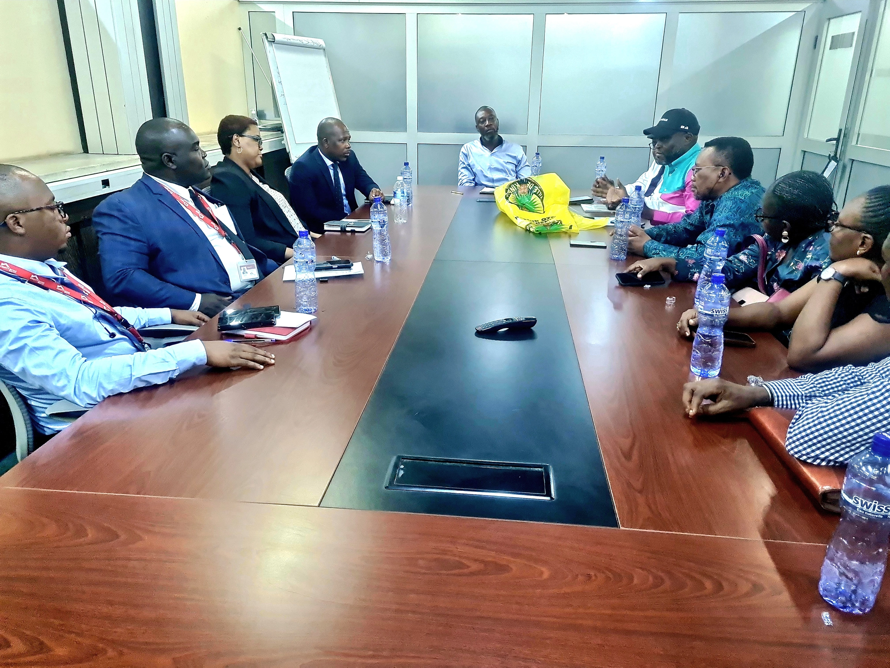

LES ENJEUX EN RDC
Des conséquences sur les rues,
les canalisations et la santé.
En RDC, améliorer la gestion des déchets répond à des difficultés visibles au quotidien. Quand les déchets s’accumulent dans les rues et les caniveaux, ils dégradent le cadre de vie et perturbent l’évacuation des eaux. Le problème dépasse donc la seule propreté.
Des canalisations obstruées
Les déchets peuvent boucher les caniveaux et les conduites d’évacuation. L’eau s’écoule moins bien, stagne ou déborde lors des pluies, ce qui augmente le risque d’inondation et peut contribuer à la dégradation des routes et des ouvrages d’assainissement.
Des risques pour la santé
Les déchets en décomposition dégagent de mauvaises odeurs. Les dépôts attirent notamment les mouches, et les eaux stagnantes favorisent les moustiques. La contamination de l’eau, des sols ou des aliments par des agents pathogènes peut aussi exposer les habitants à des maladies.
Des rues sales et encombrées
Les déchets abandonnés sur les chaussées et leurs abords rendent les déplacements et l’entretien plus difficiles. Leur accumulation entretient l’insalubrité dans les quartiers et détériore les espaces utilisés chaque jour par les habitants.
Pour agir sur ces conséquences, il faut assurer une continuité entre l’enlèvement des déchets, leur tri et leur traitement. C’est ce lien entre les métiers que la fédération cherche à renforcer.
Pour comprendre les liens entre déchets et santé : repères de l’Organisation mondiale de la Santé.
NOS DOMAINES D’ACTION
Comment ces activités
se complètent.
La collecte prend en charge les déchets.
La gestion organise leur parcours et la valorisation
permet de récupérer ce qui peut encore servir.
Valorisation des déchets
Après le tri, une partie des déchets peut servir à fabriquer de nouveaux produits. Certains plastiques peuvent ainsi entrer dans la fabrication de pavés ou d’autres matériaux, tandis que des déchets organiques peuvent être compostés. Le débouché dépend…
Découvrir l’activitéGestion des déchets
La gestion organise l’ensemble du parcours : tri, stockage, transport et orientation vers les traitements adaptés. Elle relie les différentes interventions et concerne aussi les déchets qui ne peuvent pas être valorisés.
Découvrir l’activitéCollecte des déchets
La collecte consiste à récupérer les déchets là où ils sont produits, puis à les acheminer vers les lieux de regroupement ou de traitement. Elle constitue le point de départ de leur prise en charge.
Découvrir l’activitéNOTRE ENGAGEMENT
Ce que cette coopération
doit améliorer.
La coopération entre entreprises doit permettre de répondre aux deux dimensions du problème : réduire les déchets qui encombrent les rues et les caniveaux, puis développer des débouchés pour les matières récupérables.

Mieux relier les interventions
Faciliter les échanges entre entreprises pour que la collecte débouche sur une solution de tri, de traitement ou de valorisation adaptée.
Préparer la valorisation dès le tri
Séparer les déchets selon leur nature permet de préserver les matières récupérables et d’orienter les autres vers une prise en charge appropriée.
Limiter les déchets abandonnés
L’objectif est de contribuer à réduire l’accumulation de déchets dans les lieux de vie et les milieux naturels, en améliorant leur prise en charge sur l’ensemble du parcours.
